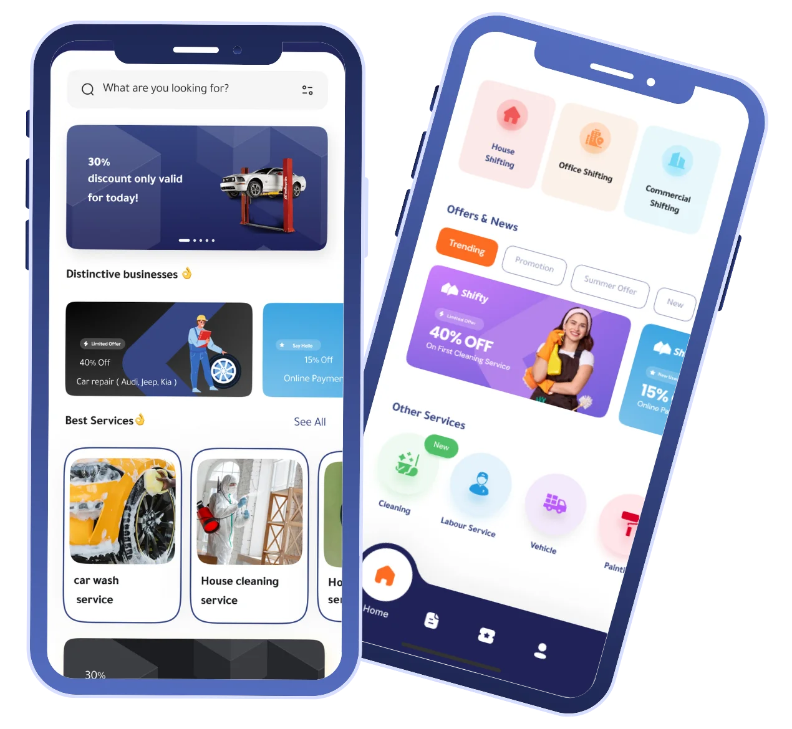
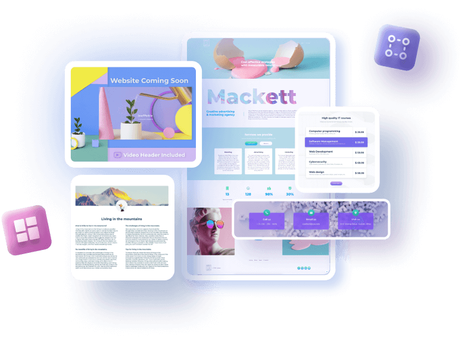
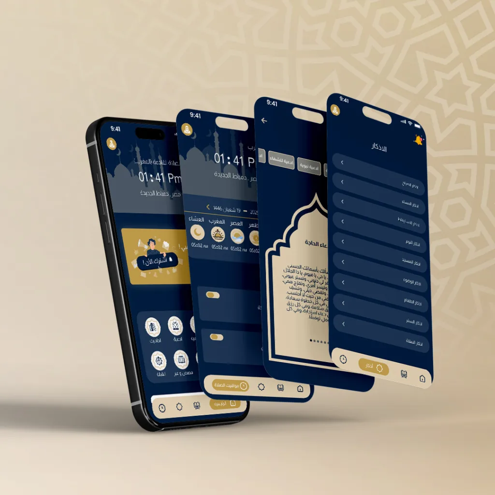
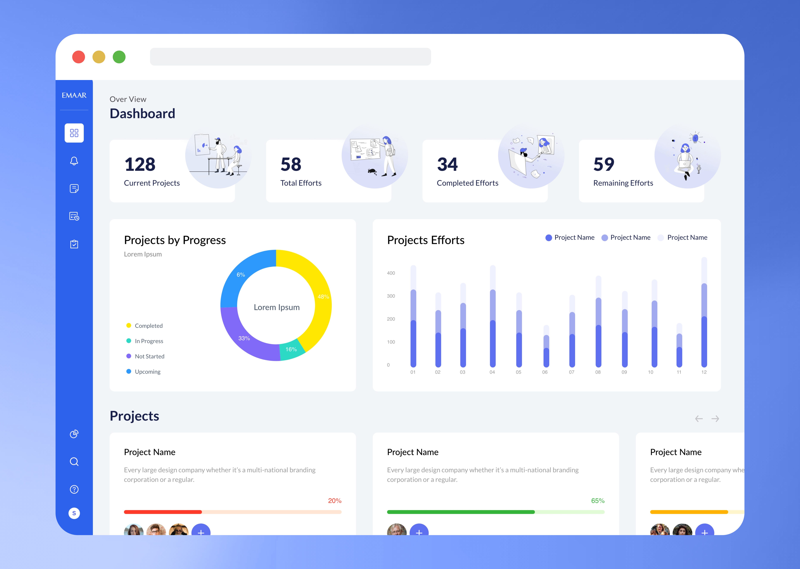

نصنع تجارب رقمية لا تُنسى تجمع بين الجمال والوظائف
فهم الفرق بين تصميم واجهات المستخدم وتجربة المستخدم
UI هو ما يراه المستخدم ويتفاعل معه مباشرة. يشمل تصميم الشاشات، الأزرار، الأيقونات، والطباعة.
UX هو شعور المستخدم أثناء استخدام المنتج. يهتم بسهولة الاستخدام وسلاسة التفاعل.
نتبع منهجية علمية لضمان أفضل تجربة للمستخدم
نقوم بدراسة جمهورك المستهدف، تحليل المنافسين، وفهم احتياجات المستخدمين الحقيقية.
ننظم محتوى المنتج ونصمم خرائط الموقع والمخططات الهيكلية.
نصمم إطارات أولية (Wireframes) لتحديد تدفق المستخدم وتوزيع العناصر.
ننشئ نماذج تفاعلية عالية الدقة لاختبار التجربة قبل التطوير.
نجري اختبارات مع مستخدمين حقيقيين ونجمع الملاحظات للتحسين.
نسلم ملفات التصميم النهائية مع دليل الاستخدام ودعم مستمر.
أحدث الأدوات لتصميم احترافي
تصميم واجهات وتعاون فريق في الوقت الفعلي
تصميم نماذج تفاعلية عالية الدقة
تصميم واجهات متقدمة لأنظمة macOS
تصميم الأيقونات والرسوم المتجهة
اختبار قابلية الاستخدام وتحليل النتائج
رسم الخرائط الذهنية وتخطيط التجربة
ما الذي يجعل تصميماتنا مميزة؟
نضع المستخدم في قلب عملية التصميم، ونتأكد من أن كل قرار يخدم احتياجاته الحقيقية.
نعتمد على البيانات والأبحاث في اتخاذ قرارات التصميم، وليس فقط الحدس والإبداع.
نصمم تجارب سلسة تعمل بشكل مثالي على جميع الأجهزة - جوال، تابلت، كمبيوتر.
نواصل تحسين التصميم بناءً على ملاحظات المستخدمين وتحليل الأداء.
نتأكد من أن تصميماتنا متاحة للجميع بما في ذلك ذوي الاحتياجات الخاصة.
نقدم نظام تصميم متكامل ودليل استخدام لتسهيل عملية التطوير.
نماذج من تصميماتنا التي تنال إعجاب العملاء




أجوبة على أكثر الأسئلة شيوعاً عن تصميم UI/UX
UI (واجهات المستخدم) هو ما يراه المستخدم ويلمسه - التصميم المرئي، الألوان، الأزرار. UX (تجربة المستخدم) هو شعور المستخدم أثناء استخدام المنتج - سهولة الاستخدام، سلاسة التنقل. كلاهما يعملان معاً لخلق منتج ناجح.
تختلف المدة حسب تعقيد المشروع. المشاريع الصغيرة قد تستغرق 2-3 أسابيع، المتوسطة 4-6 أسابيع، والكبيرة 8-12 أسبوعاً. نقدم جدول زمني مفصل بعد تقييم المشروع.
نعم، نقوم بإجراء اختبارات مع مستخدمين حقيقيين في مراحل مختلفة من التصميم. نسجل الملاحظات ونحسن التصميم بناءً على النتائج لضمان أفضل تجربة ممكنة.
بالتأكيد، نسلم جميع ملفات التصميم (Figma، Adobe XD، أو الملفات المصدرية) مع دليل استخدام شامل ونظام تصميم متكامل لمساعدة فريق التطوير.
نعم، نصمم لكل منصة على حدة مع الأخذ في الاعتبار مواصفات وإرشادات كل منصة (iOS Human Interface Guidelines، Material Design لنظام Android)، لضمان تجربة أصلية للمستخدم.
دعنا نساعدك في خلق تجربة مستخدم لا تُنسى